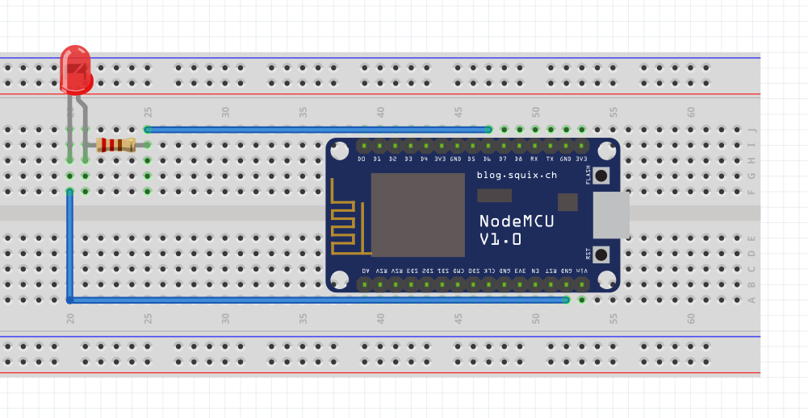
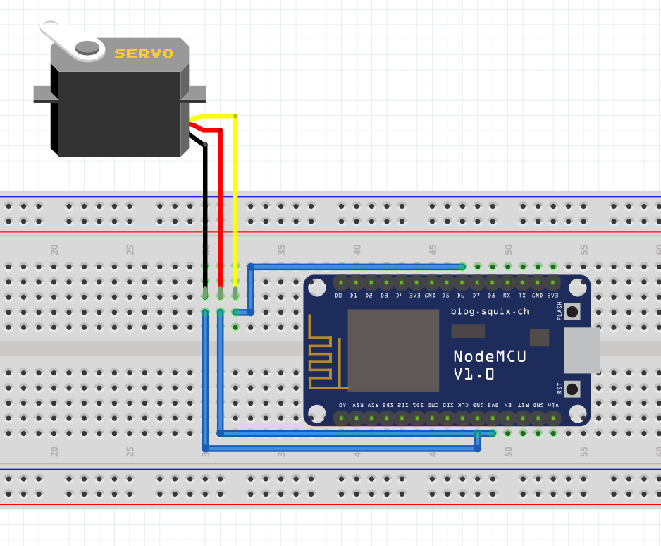

Part.3 IOT学习

IOT入门案例
首先完成基于aliyun的IOT的搭建与测试
所需材料
清单：
连线图

这个案例作为了解IOT的入门课程，全部都是根据课堂教学，参考这个页面进行制作。
在lightswitch的设置上选择了外接一个小LED灯泡，测试能不能控制它的开关，为之后连接舵机做准备。
在阿里云的物联网平台，通过在线调试功能，给灯光开关属性输入0时灭灯，输入1时亮灯，经过测试成功，因此验证了micro线、esp8266的板子都是可以正常工作的。
IOT远程控制舵机旋转
因为我们之前的作业是通过舵机控制花朵的闭合，因此我们想要将花朵的开合与IOT关联起来，实现了二者的关联，可以让我们最后的Final Project实现更加丰富的效果。
所需材料
清单：
连线图

这个案例服务于我们的Final Project，仅作为学习使用不产出具体的情景与设计，这里是代码文件。
在阿里云物联网控制平台中定义了电位器这个特征。将获取的range值写入给舵机即实现了舵机的控制。具体操作仍然是参考这个页面的最后部分，通过在线调试设置range的数值。
可以看到，最终实现了在电脑上输入数值，改变舵机选择角度的效果。